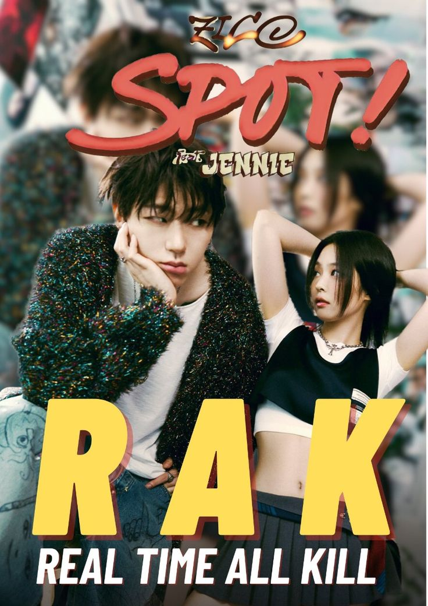
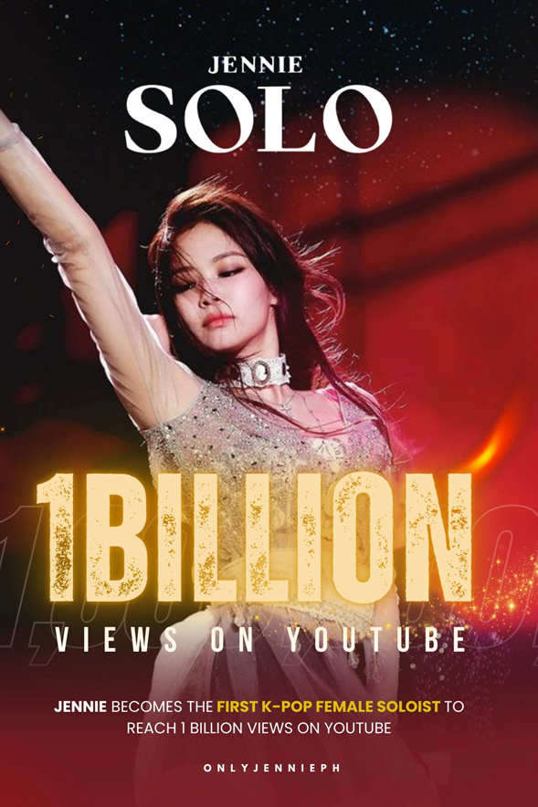
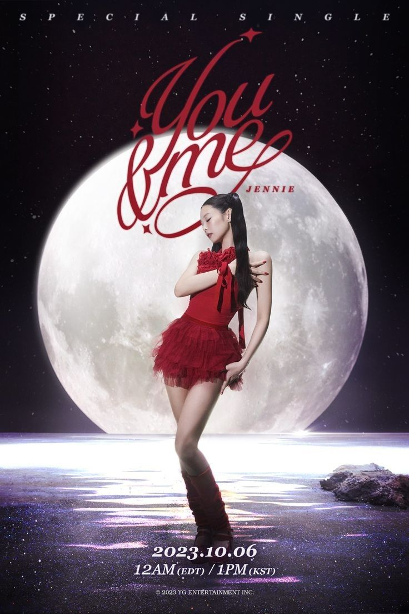

MEUS PROJETOS

JENNIE JUNTO DE ZICO FAZEM SUCESSO COM NOVO MV SPOT
Despois de muita insistência de ZICO, a cantora Jennie finalmente aceita gravar musica com o cantor, o mais novo heat SPOT fez grande sucesso nas plataformas, a maior parceria que o mundo dos k-Idols já viram e a primeira parceiria de Jennie.

SOLO 2018 BATE 1 BILHÃO NO YOUTUBE
Em 2018 jennie lança seu primeiro Album solo, fazendo grandes sucessos, com prêmios indo para mãos de Jennie, e em 2024 bate 1 BILHÃO de vozualizaçôes no youtube, a mezzo-soprano está no auge.

DEPOIS DE ANOS JENNIE LANÇA MAIS NOVO ALBUM YOU&ME
Jennie volta com mais um album para os BLINKS, com sua mais nova composição, YOU&ME se torna a mais nova musica mais ouvida da plataforma do spotify, com seu maravilhoso vocal.